Windrosendiagramm
Windrose-Graph
Zusammenfassung
Windrosendiagramme werden verwendet, um die Windgeschwindigkeits- und Windrichtungsdaten darzustellen, die über einen Zeitraum an einem bestimmten Standort gesammelt wurden. Dieses Tutorial zeigt, wie Sie Windrosendiagramme aus sowohl Roh- als auch Indexdaten erstellen:
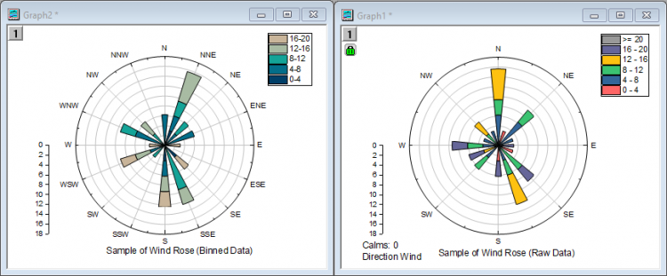
Was Sie lernen werden
Dieses Tutorial zeigt Ihnen, wie Sie:
- ein Windrosendiagramm aus eingeteilten Daten erstellen,
- die Hilfsstrichsbeschriftungen der Richtung für das Windrosendiagramm benutzerdefiniert anpassen,
- ein Windrosendiagramm aus Rohdaten erstellen.
Schritte
Dieses Tutorial basiert auf dem Projekt: <Origin-Verzeichnis>\Samples\Tutorial Data.opj.
Sie können dieses Diagramm auch im Lernzentrum finden. (Wählen Sie Hilfe: Lernzentrum im Menü oder drücken Sie die Taste F11. Öffnen Sie dann Diagrammbeispiel: Spezialisierte Diagramme.)
Teil 1: Ein Windrosendiagramm aus eingeteilten Daten erstellen
- Öffnen Sie Tutorial Data.opj und navigieren Sie zum Ordner Wind Rose im Projekt Explorer (PE).
(Wenn Sie keine Projektdatei haben, importieren Sie bitte hier die Beispieldaten.) - Aktivieren Sie die Arbeitsmappe Book6E. Markieren Sie alle Arbeitsblattspalten und klicken Sie auf die Schaltfläche Windrose - Eingeteilte Daten auf der Symbolleiste 2D-Grafiken, wie unten gezeigt, oder wählen Sie Zeichnen: Spezialisiert: Windrose - Eingeteilte Daten im Hauptmenü.
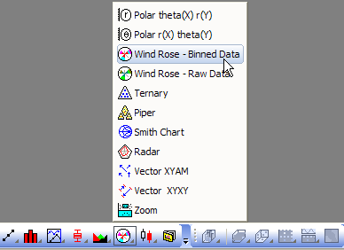
- Klicken Sie doppelt auf die Radialachse des Polardiagramms, um den Dialog Achsen zu öffnen. Gehen Sie bei ausgewähltem Radial - Innen 1 zur Registerkarte Zeigen und deaktivieren Sie das Kontrollkästchen Zeigen, um die innere Radialachse auszuschalten.
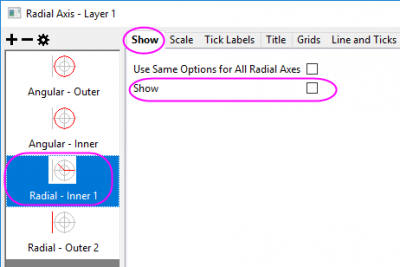
Wählen Sie die Option Radial - Außen 2 im linken Bedienfeld und aktivieren Sie das Kontrollkästchen Zeigen, um die äußere Achse einzuschalten.
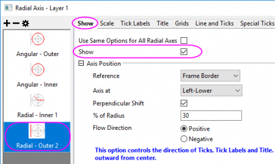
Klicken Sie auf die Schaltfläche OK, um nur die Radialachse links unten zu zeigen.

- Klicken Sie auf einen der Balken im Diagramm und in der angezeigten Minisymbolleiste auf die Schaltfläche Füllfarbe
 auf der Registerkarte Gruppe
auf der Registerkarte Gruppe  , um die Farbauswahl zu erweitern. Wählen Sie in der Farbauswahl auf der Unterregisterkarte Nach Zeichnungen die Farbliste oder -palette, die Sie auf die Balkenfarbe anwenden möchten. 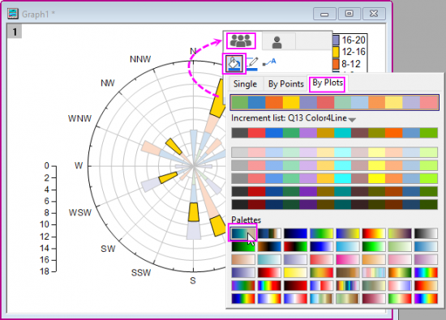
, um die Farbauswahl zu erweitern. Wählen Sie in der Farbauswahl auf der Unterregisterkarte Nach Zeichnungen die Farbliste oder -palette, die Sie auf die Balkenfarbe anwenden möchten. 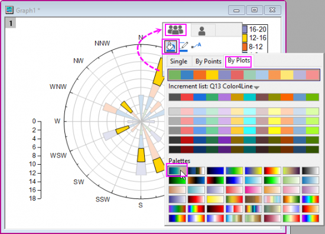 - Klicken Sie auf die Schaltfläche Text
 , um das Objekt Text als Diagrammtitel hinzuzufügen. Geben Sie Sample of Wind Rose (Binned Data) in das Objekt Text ein.
, um das Objekt Text als Diagrammtitel hinzuzufügen. Geben Sie Sample of Wind Rose (Binned Data) in das Objekt Text ein.
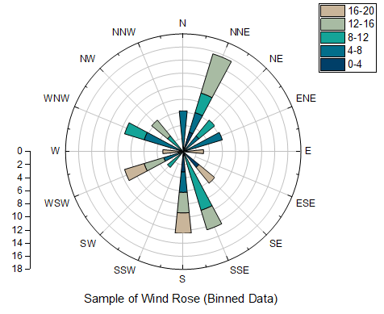
Teil 2: Ein Windrosendiagramm aus Rohdaten erstellen
- Gehen Sie zum Projektordner Statistical and Specialized Graphs: Specialized: Wind Rose und aktivieren Sie die Arbeitsmappe Book7E, Arbeitsblatt Raw Data. (Wenn Sie keine Projektdatei haben, importieren Sie bitte hier die Beispieldaten.)
- Markieren Sie die Spalten A und B. Klicken Sie auf die Schaltfläche Windrose - Rohdaten auf der Symbolleiste 2D-Grafiken wie unten gezeigt oder wählen Sie Zeichnen: Spezialisiert: Windrose - Rohdaten im Hauptmenü.
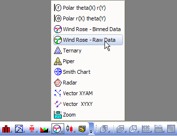
Legen Sie im aufgerufenen Dialog die untenstehenden Einstellungen fest und klicken Sie auf OK, um das Windrosendiagramm zu erstellen:
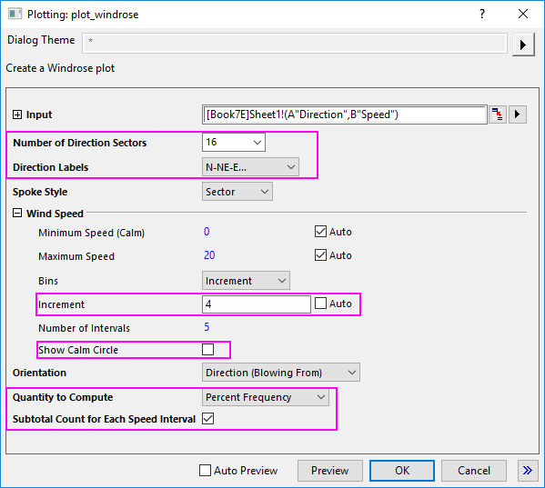 - Führen Sie die gleichen Operationen wie in Schritt 3 in Teil 1 durch, um die Radialachse links unten zu verschieben. Gehen Sie zur Registerkarte Hilfsstrichsbeschriftungen für Radial - Außen 2, um das Suffix "%" für die Hilfsstrichsbeschriftungen der Radialachse zu entfernen.
- Führen Sie die gleichen Operationen wie in Schritt 4 in Teil 1 durch, um die Füllfarbe für die gestapelten Balken zu ändern.
Das Diagramm sollte am Ende dem im Bild unten entsprechen:
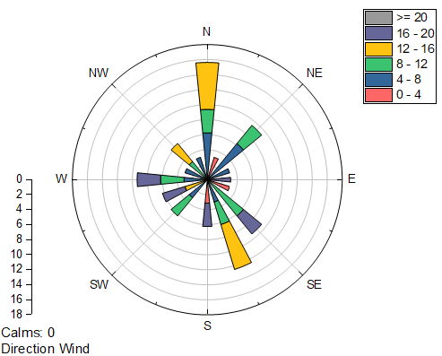
Beispieldaten
Eingeteilte Daten
Um eingeteilte Daten in das Arbeitsblatt zu importieren, können Sie die Binned Data 1 (einschließlich der Überschrift) kopieren und dann Datei: Importassistent auswählen. Aktivieren Sie die Option Zwischenablage in der Gruppe Datenquelle und klicken Sie dann auf die Schaltfläche Fertigstellen, um die Daten in Origin zu importieren.
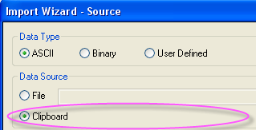
| Richtung |
0-4 |
4-8 |
8-12 |
12-16 |
16-20 |
| 22,5 |
3,125 |
3,125 |
3,125 |
6,25 |
0 |
| 45 |
0 |
3,125 |
3,125 |
0 |
0 |
| 67,5 |
0 |
6,25 |
0 |
0 |
0 |
| 90 |
0 |
0 |
0 |
0 |
3,125 |
| 112,5 |
0 |
0 |
0 |
0 |
0 |
| 135 |
3,125 |
0 |
0 |
0 |
3,125 |
| 157,5 |
0 |
0 |
9,375 |
3,125 |
0 |
| 180 |
3,125 |
3,125 |
0 |
3,125 |
3,125 |
| 202,5 |
0 |
0 |
0 |
0 |
0 |
| 225 |
0 |
0 |
3,125 |
0 |
0 |
| 247,5 |
0 |
3,125 |
0 |
3,125 |
3,125 |
| 270 |
0 |
0 |
0 |
0 |
3,125 |
| 292,5 |
0 |
6,25 |
3,125 |
0 |
0 |
| 315 |
0 |
0 |
3,125 |
3,125 |
0 |
| 337,5 |
0 |
0 |
0 |
0 |
0 |
| 360 |
0 |
6,25 |
0 |
0 |
0 |
| 382,5 |
0 |
0 |
0 |
0 |
0 |
Rohdaten
Um Rohdaten in das Arbeitsblatt zu importieren, können Sie die Raw Data (einschließlich der Überschrift) kopieren und dann Datei: Importassistent auswählen. Aktivieren Sie das Kontrollkästchen Zwischenablage in der Gruppe Datenquelle und klicken Sie dann auf die Schaltfläche Fertigstellen, um die Daten in Origin zu importieren.
| Richtung |
Geschwindigkeit |
| 311,5 |
12,75 |
| 142,7 |
11,18 |
| 161,6 |
5,9 |
| 277,3 |
8,24 |
| 155,3 |
13,46 |
| 40,8 |
8,57 |
| 43,4 |
4,38 |
| 1,3 |
10,91 |
| 78,8 |
18,72 |
| 237,8 |
16,22 |
| 114,6 |
0,88 |
| 2,1 |
12,05 |
| 290,5 |
4,6 |
| 174,1 |
3,29 |
| 267,6 |
16,64 |
| 8 |
5,6 |
| 213,9 |
8,04 |
| 134,8 |
17,26 |
| 137,6 |
11,87 |
| 46,1 |
5,48 |
| 4,5 |
13,47 |
| 311,2 |
10,17 |
| 154,4 |
11,17 |
| 176,2 |
18,91 |
| 348,1 |
4,11 |
| 225,2 |
6,65 |
| 236,4 |
12,87 |
| 11,7 |
1,07 |
| 278,9 |
4,36 |
| 356,5 |
5,01 |
| 58,9 |
7,3 |
| 161,8 |
15,6 |